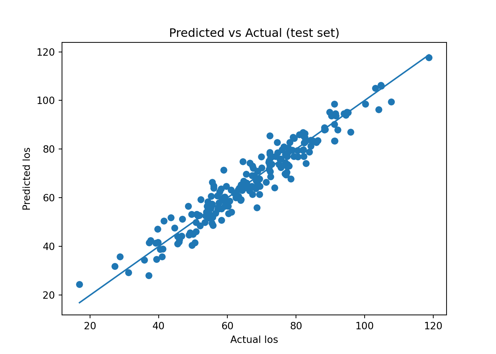
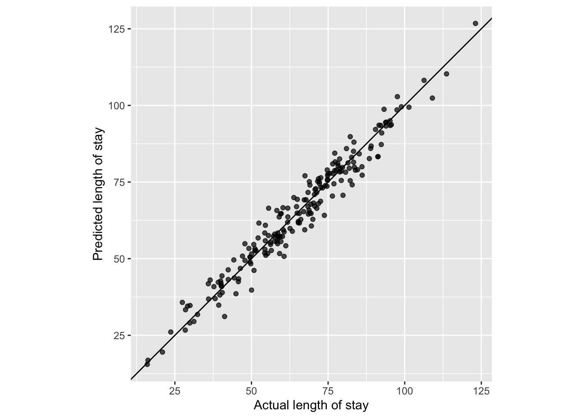

import pandas as pd
import numpy as np
import joblib
from sklearn.model_selection import train_test_split
from sklearn.linear_model import LinearRegression
from sklearn.metrics import mean_squared_error
from sklearn.metrics import mean_absolute_error
import matplotlib.pyplot as plt(2) Your First ML Pipeline
Overview
In this exercise you will build your first (simple) machine learning pipeline using a linear regression algorithm. A machine learning pipeline is a sequence of reproducible steps that takes raw data and produces predictions.
This structure is essential in ML because we want models that generalize beyond the dataset we used to fit them. You have previously created a linear regression model in statistics; here we use it within an ML workflow where an additional set of steps designed to test how well a model performs on new, unseen data are needed. This workflow will continue evolving and expanding as we unlock new concepts in the upcoming days.
Pipeline steps
- Load data
- Define features (X) and outcome (y)
- Split into train/test
- Fit algorithm on training data
- Evaluate on held-out test data
It is important to note, that in this exercise we use the simplest possible validation strategy: a train/test split, where the model learns from one subset of the data and is evaluated on another. This approach is easy to understand and highlights the central ML concept of generalization. However, a single split may not use the data as efficiently as possible and can give unstable estimates of model performance depending on how the split is made. Later in this course, we will introduce more robust resampling techniques such as cross-validation, repeated splits, and bootstrapping.These methods allow us to: - evaluate models more reliably,
- tune models more effectively, and
- make better use of limited data.
But for now, the simple train/test split is perfect for learning the fundamentals.
Data
We will use a pre‑provided dataset (can find it in canvas): los_data.csv or download it from here - Download los_data.csv. This dataset represents a simplified hospital scenario:
-
Outcome (y):
LOS(length of stay), measured in days
-
Features (X):
-
Age— patient age
-
Severity— a severity score representing illness burden (1-10)
-
In the exercises that follow, we treat this as a purely predictive problem:
given a patient’s age and severity, can we accurately forecast their LOS?
Part A — Python (scikit‑learn)
Below, you will implement the pipeline in Python using scikit-learn.
Each step mirrors the conceptual pipeline described above: identifying X and y, splitting the data, fitting the model, and assessing performance on unseen test cases.
Note that we also save the trained model (.pkl file) (using library joblib), because in practice a model is almost always reused on new incoming data.
Setup
1) Load data
df = pd.read_csv("los_data.csv")
df.head() Age Severity LOS
0 80.564377 9.862713 103.029826
1 51.529527 4.960341 55.964669
2 65.446926 4.300291 71.373588
3 69.492939 3.517961 69.331486
4 66.064025 2.824803 66.0859832) Define X and y
X = df[["Age", "Severity"]]
y = df["LOS"]3) Train/test split
X_train, X_test, y_train, y_test = train_test_split(
X, y, test_size=0.2, random_state=42
)
X_train.shape, X_test.shape((800, 2), (200, 2))4) Fit linear regression algorithm
model = LinearRegression()
model.fit(X_train, y_train)LinearRegression()In a Jupyter environment, please rerun this cell to show the HTML representation or trust the notebook.
On GitHub, the HTML representation is unable to render, please try loading this page with nbviewer.org.
Parameters
| fit_intercept | True | |
| copy_X | True | |
| tol | 1e-06 | |
| n_jobs | None | |
| positive | False |
joblib.dump(model, "los_fit_model.pkl") #save model['los_fit_model.pkl']model.intercept_, model.coef_(np.float64(-8.975621226712335), array([0.93938827, 3.41119175]))5) Evaluate on the test set
We will talk about this further too, but in order to assess if our predictions are okay, we have to measure it. In this case we are using the metric MAE to assess our performance.
MAE is calculated by taking the absolute difference between each predicted value and the true value, and then averaging those differences across the test set.
\[ MAE = \frac{1}{n} \sum_{i=1}^{n} | y_i (true) - \hat{y}_i (predicted) | \]
In our case, as we are predicting LOS, it tells us, on average, how many days our predictions differ from the true LOS.
Later in the module, we will compare MAE with other metrics (RMSE, R², median absolute error) and explore when each is preferable.
pred_test = model.predict(X_test)
mae_new = mean_absolute_error(y_test, pred_test)
mae_new3.73430528916489826) Visualization
plt.figure()
plt.scatter(y_test, pred_test)
min_los = min(y_test.min(), pred_test.min())
max_los = max(y_test.max(), pred_test.max())
plt.plot([min_los, max_los], [min_los, max_los]) # 45° line
plt.xlabel("Actual los")
plt.ylabel("Predicted los")
plt.title("Predicted vs Actual (test set)")
plt.show()
Part B — R (tidymodels)
Now we repeat the same pipeline using the tidymodels framework in R.
Setup
1) Load data
df <- read_csv("los_data.csv")Rows: 1000 Columns: 3
── Column specification ────────────────────────────────────────────────────────
Delimiter: ","
dbl (3): Age, Severity, LOS
ℹ Use `spec()` to retrieve the full column specification for this data.
ℹ Specify the column types or set `show_col_types = FALSE` to quiet this message.head(df)# A tibble: 6 × 3
Age Severity LOS
<dbl> <dbl> <dbl>
1 80.6 9.86 103.
2 51.5 4.96 56.0
3 65.4 4.30 71.4
4 69.5 3.52 69.3
5 66.1 2.82 66.1
6 58.4 5.19 59.02) Split into train/test
set.seed(42)
split <- initial_split(df, prop = 0.8)
train <- training(split)
test <- testing(split)3) Specify the model
los_model <- linear_reg() %>%
set_engine("lm")4) Fit, save the model and evaluate
4) Visualization
# test_pred already has columns: .pred and LOS
ggplot(test_pred, aes(x = LOS, y = .pred)) +
geom_point(alpha = 0.7) +
geom_abline(slope = 1, intercept = 0) +
labs(
x = "Actual length of stay",
y = "Predicted length of stay"
) +
coord_equal()
Exercise
You will now apply exactly the same ML pipeline design to a different dataset.
The key idea is that you can swap in a new dataset and a new prediction target, but the pipeline structure remains unchanged.
Remember the baby weight exercise you did in module 2? Your task is to build a pipeline that predicts baby weight (bw) from two ultrasound measurements: bpd (biparietal diameter) and ad (abdominal diameter). Load the dataset (below) and create a ML pipeline. Use a test size of 20% (i.e., 80% training, 20% testing), just as you did above.
Solution
To be uploaded after class
Struggling? Or just want a bit more? Read through these resources:
Extension (optional)
Just as you can rerun the pipeline on different datasets, you can also rerun it using different algorithms.
Try replacing linear regression with another model and observe how the pipeline stays the same while only the learning algorithm changes.